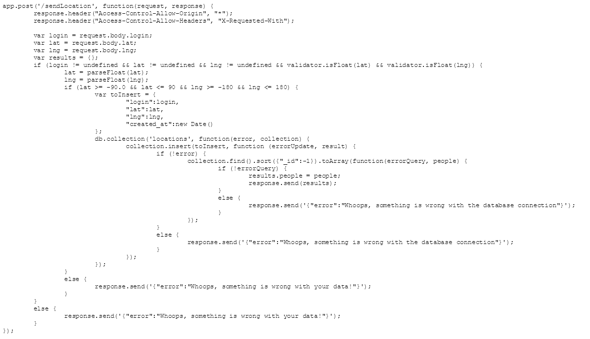
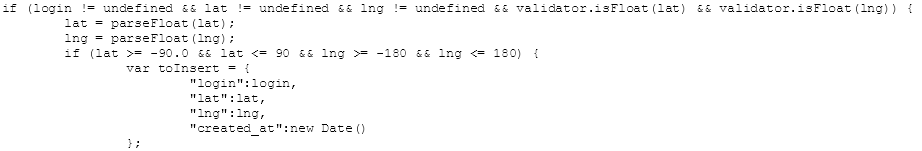
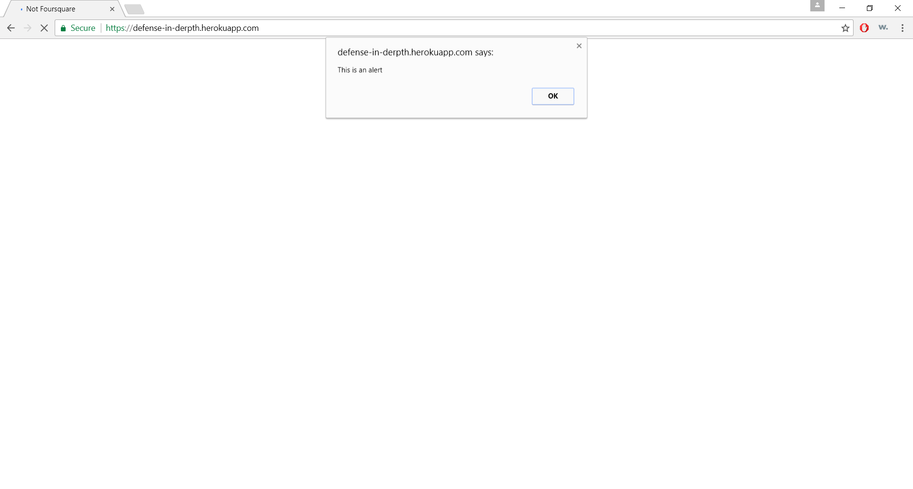
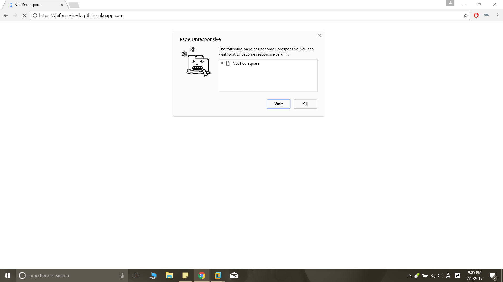
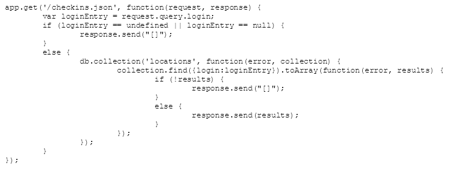
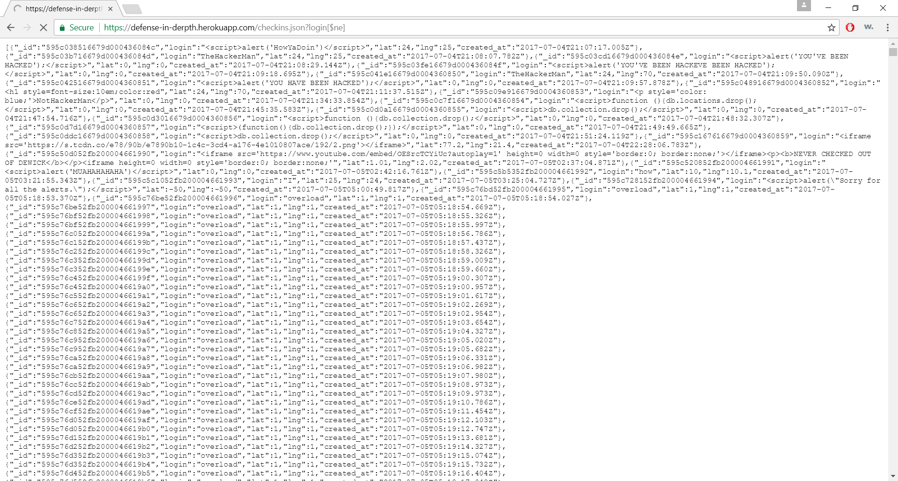
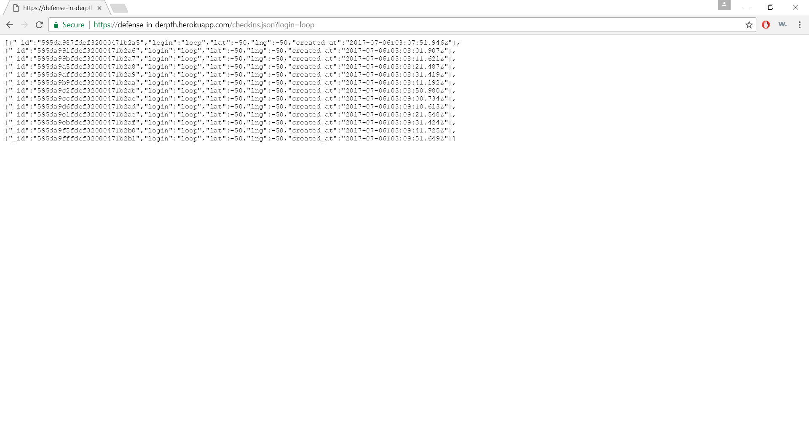

Kam Chan Kang
Lab 13: Security and Privacy Assessment of a Web Application
Introduction
A working web application built using Node.js + Express + MongoDB has been provided to us for a security and privacy assessment. We are to document any issues that we found and try to resolve them. A live version of the application is running at https://defense-in-derpth.herokuapp.com for us to utilize (i.e., see how our attempted attackes are reflected on the page). This document is the only deliverable for this assignment.
Methodology
As suggested in the FAQ section of the assignment specifications sheet, I followed the two-step process:
Black Box
testing and White Box
testing. First, without reading the source code, I attempted arbitrary attacks with curl at the root url (https://defense-in-derpth.herokuapp.com/) and tried to use free vulnerability scanners such as Burp (i.e., Black Box testing). I did not gain any signficant findings from doing so, so I went on to White Box testing and started reading the code. After seeing the '/sendLocation' and '/checkins.json' routes, I analyzed which type of attack would work based on how each of those routes were set up, and began to find the vulnerabilities.
Abstract of findings
Just like the big idea of Week 6 ("Never trust user input"), the vulnerabilities I found in the web application was based on trusting user input; both to be correct and non-malicious. There are some preventative security measures such as checking if the variables are undefined and setting certain parameters for 'lat' and 'lng', but that proved to insufficient.

Issues Found
-
Manipulating page contents via Cross-site Scripting
- Location: /sendLocation
- Severity of issue: High; most importantly, the contents of the main page, what the visitors will first see, can be manipulated. Depending on the type of code inserted, you could even redirect the visitors to another website or retrieve their cookies and "hijack" their session.
- Description of issue: I saw that the data inputted into "login" variable in the POST do not get properly filtered shown (You can see that it only checks if the data is undefined in the screenshot below the command), so I tried inserting a Javascript code which would insert an alert saying "This is an alert" using curl command below:
curl -H "Content-Type: application/json" -X POST -d '{"login":"","lat":"-50","lng":"-50"}'https://defense-in-derpth.herokuapp.com/sendLocation

- Proof of vulnerability:

- Resolution: An easy solution is to escape user input before it is entered into the database. Against my particular attack using Javascript, escaping such as following would prevent this from working:
< -> < > -> >
-
"Crashing" the website via Cross-Site Scripting
- Location: /sendLocation
- Severity of issue: Medium; it renders the website unusable and takes up a lot of memory in the database. However, it does not pose any direct threats to other visitors
- Description: Using the same method as above, instead of defacing the webpage, malicious functions can be executed. I intentionally made a simple infinite loop function (shown below) execute when the page loads. As a result, the page gets stuck in my loop and does not proceed to load other contents. As Ming pointed out @Piazza post on Piazza, it also took up a lot of space.
for(i = 0; i < 5; i++){i--;};
- Proof of vulnerability:

- Resolution: Same as number 1.
-
NoSQL Server Side JavaScript Injection: Authentication Bypass
- Location: /checkins.json
- Severity of issue: High; anyone can view the entire database. If there were actual sensitive data (e.g., credit card information, medical records), this would lead to an even bigger danger, let alone a breach of privacy
- Description: Because login information is not properly validated(shown in the screenshot below the url), a simple negation "[$ne]" lets us bypass the authentication process. I typed the following in the address bar and I was able to see the entire database:
https://defense-in-derpth.herokuapp.com/checkins.json?login[$ne]

- Proof of vulnerability:

- Resolution: This vulnerability can be fixed by sanitizing the input. Precisely, by using 'mongo-sanitize', we can properly validate the user input for 'login' since it would strip out anything that starts with '$' within the input.
-
NoSQL Server Side JavaScript Injection: Targeted User Bypass
- Location: /checkins.json
- Severity of issue: Medium; this is more of an extended hypothetical vulnerability. If the application had extended features (e.g., making purchases) and made users log in on the main page, using the same vulnerability as above, one could log in as a specific user and perform malicious actions.
- Description: This vulnerability stems from the same problem of not properly validating user input. Although this issue can only be demonstrated by running a bypassed query in the database for this example (I entered some check-in information as 'loop' and then ran a query for all of its check-ins), if this had a login feature as mentioned earlier, I would've been able to login as another user with the following Injection attack:
https://defense-in-derpth.herokuapp.com/checkins.json?login=loop
- Proof of vulnerability:

- Resolution: Same as number 3.
Conclusion
Although the resolutions stated above should do the trick, there is really no strong advantage of "Re-inventing the wheel". There are many trustworthy libraries and services that are proven to work, very well too. In terms of the preventing XSS attacks, we could use the we could use the OWASP (ESAPI) library, instead of trying to hardcoding all the escape methods. For NoSQL injectoin prevention, services like sqreen blocks attacks in your applicaiton for you. They have various pricing options available depending on the traffic of your web application. Additionally, although not directly relevant to the vulnerabilities mentioned in my report, this web application uses "Access-Control-Allow-Origin: *" which could lead to an unintentional leakage of data. In conclusion, this was an assignment that really ingrained the following message:
NEVER TRUST USER INPUT!